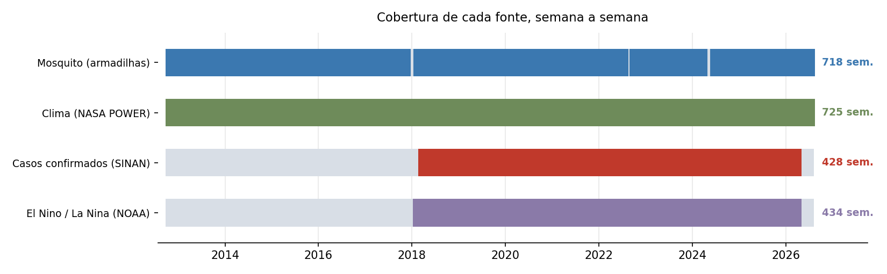

Pagina do projeto
Cenario Principal
Nao e resultado final. Serve para controle proprio e para mostrar o andamento. Numeros de 30/08/2026 — vao mudar. A versao oficial sera montada depois, para a apresentacao.
Como chegamos ate aqui
- 276 semanas descontinuas
- Interrupcao de 114 semanas
- dez/2018 a jun/2023, retomada em ago/2025
- Mosquitos em armadilhas
- Clima
- Casos de dengue
- El Nino
- Boosting: LightGBM, GB, HistGB
- Bagging: RandomForest, ExtraTrees
- Outros: Ridge, ElasticNet, KNN, SVR
- Regressao de casos
- Contribuicao do vetor
- Deteccao de surto
- Densidade por bairro
- Confronto com a literatura
- Serie oficial 2012 a 2025
- 2026 segue por coleta propria
- A interrupcao deixa de existir
- Inversao dia/mes corrigida
- 222 duplicatas removidas
- Validacao cruzada: divergencia nula
- Ganho atribuivel a cobertura
- Vence as referencias nos 12 horizontes
- Nada resiste a correcao multipla
- Bairro descartado: 31% de ruido
- Resultados sem convergencia
- Faltava criterio de selecao
- Escopo reduzido a um cenario
- Vies do pico diagnosticado
- Primeira hipotese refutada
- Protocolo declarado antes
- HistGradientBoosting
- Perda quantilica 0,80
- Com variaveis de vetor
- Mesmas semanas de avaliacao
- R² em 3 meses: 0,541 → 0,758
A configuracao de referencia
scikit-learn
O que o numero significa
O achado metodologico
A funcao de perda importa mais que a escolha do algoritmo. O projeto passou meses comparando 9 algoritmos, e o ganho maior estava numa linha de configuracao que ninguem tinha mexido. O mesmo HistGradientBoosting com perda padrao cai para o 20º lugar.
Quanto se ganhou, e de onde veio
Comparacao entre a primeira configuracao (LightGBM, perda padrao, sem vetor) e a atual, medidas nas mesmas semanas de avaliacao. A diferenca e so de modelagem: nenhuma das duas recebeu dado que a outra nao tivesse.
| horizonte | primeira configuracao | atual | ganho |
|---|---|---|---|
| 1 semana | 75% | 85% | +10 pp |
| 1 mes | 65% | 83% | +18 pp |
| 2 meses | 57% | 63% | +6 pp |
| 3 meses | 46% | 62% | +16 pp |
(captura do pico; R² em 3 meses vai de 0,541 para 0,758)
De onde veio o ganho, passo a passo
Decomposicao em um mes, acrescentando uma mudanca por vez:
| passo | captura do pico | efeito |
|---|---|---|
| Primeira configuracao | 64,7% | — |
| + trocar o algoritmo para HistGradientBoosting | 79,8% | +15,1 pp |
| + acrescentar as variaveis de vetor | 69,9% | −9,9 pp |
| + calibrar a funcao de perda | 83,2% | +13,3 pp |
O vetor, sozinho e sem calibracao, derruba a captura do pico em 10 pontos — ele melhora o erro medio e piora o topo. So nao prejudica porque a perda quantilica vem depois e corrige justamente o topo, com folga. E um efeito de interacao: as duas mudancas isoladas nao entregam o que entregam juntas. Isso nao aparecia nas analises anteriores, que mediram o vetor por MAE e por Diebold-Mariano, nunca por captura de pico.
Desempenho por horizonte
Medido em 2024+, periodo que nao participou da escolha da configuracao.
era 82% com perda padrao
era 70% — maior ganho
era 65% — diferenca dentro do ruido
era 58% com perda padrao
O ganho da calibracao nao e uniforme: concentra-se em um mes (70% para 83%). Em dois meses a diferenca de dois pontos esta dentro do ruido — o intervalo de confianca da diferenca por semana de pico e [-87; +55] casos, e cruza zero. A mesma configuracao com outros valores de quantil sobe e desce nesse horizonte sem padrao, e nos demais algoritmos o efeito e positivo. Nao ha piora; ha ausencia de ganho mensuravel.
Contra as reguas simples
| horizonte | modelo | repetir o valor de hoje | media historica da epoca |
|---|---|---|---|
| 1 semana | 0,85 | 0,89 | 0,14 |
| 1 mes | 0,76 | 0,42 | 0,08 |
| 2 meses | 0,74 | −0,48 | −0,07 |
| 3 meses | 0,64 | −1,08 | −0,20 |
Valor negativo = pior que chutar a media de todas as semanas. Em 1 semana o modelo perde para a regra "vai ter o mesmo tanto de hoje" — nesse horizonte ninguem precisa de modelo.
Os dados

Mosquito e clima cobrem os 14 anos. Os casos so existem de 2018 em diante — e sao eles que definem quanto dado o modelo realmente pode usar. Os cortes finos na faixa do mosquito sao as 7 semanas sem vistoria: a virada de 2017/18, uma semana de 2022 e as tres semanas da enchente de maio/2024.
A variavel de mosquito e *femeas de Aedes aegypti divididas pelas armadilhas efetivamente inspecionadas* na semana. So femeas, porque macho nao transmite.
O mosquito: o que mostra e o que nao prova
A direcao e consistente; a prova nao existe. As duas coisas precisam ser ditas na mesma frase. Em horizonte longo o mosquito e o preditor individual mais forte disponivel (correlacao de 0,61 a 0,62 entre 4 e 8 semanas, contra 0,27 a 0,40 do clima) — e ainda assim nao fecha estatisticamente.
Testado e descartado
Tudo abaixo foi testado com regras escritas antes de rodar, e reprovado por medicao.
| tentativa | resultado |
|---|---|
| alvo em casos notificados | pior — R² 0,42 contra 0,76 em 3 meses |
| alvo corrigido por nowcasting | e a mesma serie que notificados: identica em 99,1% das semanas |
| Tweedie como funcao de perda | piora o vies do pico em 2 e 3 meses |
| mes-alvo como variavel categorica | neutro |
| log no alvo | piora bastante o vies |
| lags anuais (52 e 104 semanas) | piora 2 e 3 meses |
| anomalia climatica contra a media historica | piora 3 meses |
| acumulo de chuva e calor em 8 e 12 semanas | piora 3 meses |
indicadores de transmissao do InfoDengue (Rt e outros) | ganho de 0,004 — nulo |
| cortar a serie e usar so 2022 em diante | treinaria nas 2 menores epidemias para prever as 2 maiores |
| El Nino / La Nina | ✅ unica aprovada — ganho de ~7% em 2 meses |
O El Nino passou em teste isolado e ainda nao foi validado dentro do grid — e candidato, nao faz parte da configuracao.
Limitacoes
O grupo InfoDengue declara as mesmas limitacoes de sorotipo e imunidade no Relatorio Tecnico 02/2026 — vira citacao, nao fraqueza do trabalho.
Trinta configuracoes competiram. Escolher a melhor entre trinta garante que parte da vantagem e sorte. As tres primeiras sao o mesmo algoritmo variando so o quantil (0,80 · 0,85 · 0,70), separadas por 2% a 4% — estatisticamente indistinguiveis. A afirmacao honesta e "a melhor entre as 30 testadas", nunca "a melhor possivel".
As 22 variaveis do modelo
O que entra de fato no HistGradientBoosting, na ordem em que o motor monta.
| grupo | variavel | o que e |
|---|---|---|
| Autorregressivo | casos | casos da semana atual |
casos_lag1 a casos_lag4 | casos de 1 a 4 semanas atras | |
casos_mm4 | media movel de 4 semanas | |
| Sazonalidade | sem_sin · sem_cos | epoca do ano da semana atual |
alvo_sin · alvo_cos | epoca do ano da semana prevista | |
| Clima | temp_media_lag4 | temperatura media, 4 semanas atras |
umid_media | umidade media da semana | |
temp_media_lag3 | temperatura media, 3 semanas atras | |
temp_max | temperatura maxima da semana | |
pressao_media_lag3 | pressao media, 3 semanas atras | |
pressao_media_lag4 | pressao media, 4 semanas atras | |
| Mosquito | aedes_aegypti_por_armadilha | densidade da semana atual |
..._lag1 a ..._lag4 | densidade de 1 a 4 semanas atras | |
vetor_mm4 | media movel de 4 semanas |
As 6 de clima nao sao fixas: sao as melhores de 22 candidatas, escolhidas por ganho antes de cada rodada. As demais colunas de clima ficam de fora de proposito — mais variaveis, com ~300 semanas de treino, viram ruido.
Fora do modelo, de proposito: identificadores (fonte, SE, data, ano, semana), contagens brutas de mosquito (aedes_aegypti, numero_de_armadilhas), as outras especies (aedes_albopictus, culex_sp) e a marca denominador_aproximado — esta ultima porque em 16/08 ela vazou como feature e quebrou o modelo.
Proximos passos
- Gravar a configuracao de referencia no codigo — hoje ela existe so nas analises datadas.
- Validar o El Nino dentro do grid completo, e nao isolado.
- Teste focado em 3 meses com cinco sementes, para medir bem o efeito do mosquito e ver se ele depende da inicializacao.
- Confirmar na temporada 2026-2027 — o unico dado ainda nao usado, e o unico caminho para transformar indicio em achado com prova.